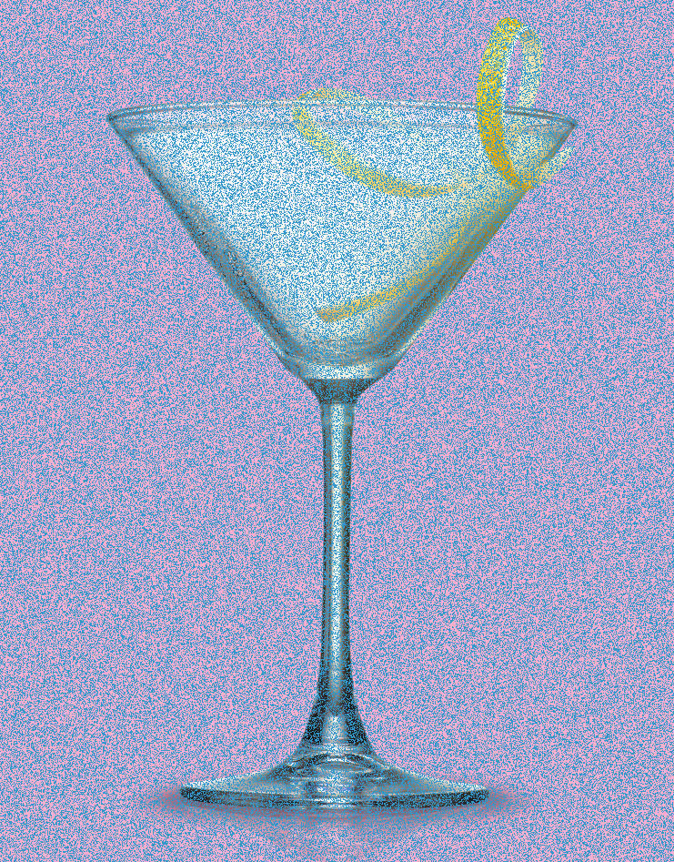

C.BAR
Editor's Note: This is a section for people who love classic cocktails. Choose these if you are a big fan of cocktail's culture.

For Nostalgia
Summertime is the perfect time to indulge in a refreshing cocktail on a balmy night. But before you reach for that minty mojito or sweet sangria, consider stepping out of your modern-day comfort zone and going back to the drinks of 100 years ago.
"Some of the best cocktails that we think about today — the martini, the daiquiri, the Manhattan — those all came out between the 1860s and Prohibition," says Derek Brown, an award-winning mixologist who has studied the history of alcohol in America.
Historians have dubbed that time span the Golden Age of Cocktails, an era when bartenders got pretty inventive. Brown tells NPR's Audie Cornish that these bar staples were originally simpler — but perhaps better tasting— than the versions modern-day cocktail lovers are familiar with.